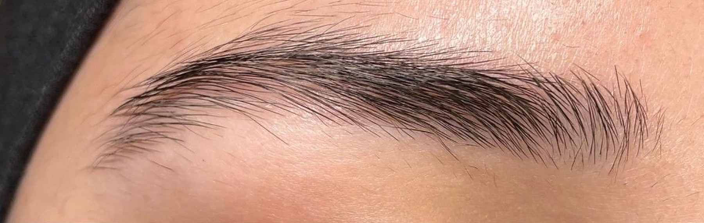
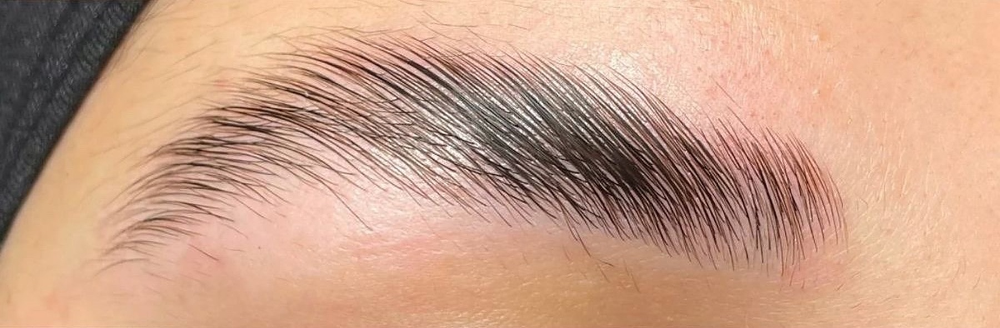
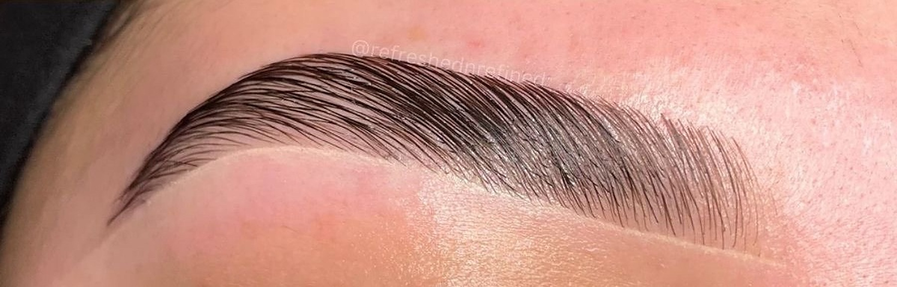

Parcours de formation : les sourcils, puis les cils et le développement professionnel
I.Sourcils03
Anatomie et cycle de vie du poil04
Pourquoi les sourcils tombent-ils ?05
Diagnostic et application en cabine06
Restructuration et mapping07
Brow Lift : technique et temps de pose08
Teinture hybride et décoloration09
Atelier visuel Brow Lift et sécurité11
II.Cils13
Diagnostic, rehaussement de cils, teinture et Lash Botox14
III.Pratique professionnelle16
Fiches pratiques et suivi des clientes17
Réseaux sociaux et communication18
Gestion d’activité et fidélisation21
IV.Évaluation22
Questionnaire de connaissances et références23
01
Partie I
Sourcils
Au programme de cette partie
04Le cycle de vie du sourcil
05Pourquoi les sourcils tombent-ils ?
06Restructuration des sourcils & mapping
07Mapping : les trois repères
08Brow Lift — Thuya
09Teinture des sourcils — Brow Daddy
10Décoloration des sourcils
11Atelier visuel — Brow Lift
12Hygiène, sécurité et qualité
Dolce Lash & Brow · Support pédagogiquePartie I — Sourcils
Anatomie du poil
Le cycle de vie du sourcil
Comprendre la croissance, le repos et la chute naturelle du poil
AnagènePhase de croissance
CatagènePhase de transition
TélogènePhase de repos
AnagèneLe cycle recommence, nouvelle pousse de poils
Le cycle est continu, mais chaque follicule évolue indépendamment.
Anagène : le follicule fabrique un nouveau poil. Catagène : l’activité de croissance ralentit et le follicule se rétracte. Télogène : le poil reste en place au repos, puis se détache lors de l’exogène (phase de libération du poil). Un nouveau cycle peut alors commencer.
Les sourcils ont un cycle plus court que les cheveux du cuir chevelu : ils restent donc naturellement plus courts. Les durées varient selon les personnes et les follicules ; les schémas ne sont pas un chronomètre individuel.
Dolce Lash & Brow • Manuel de formation
Dolce Lash & Brow · Support pédagogiquePartie I — Sourcils
Anatomie du poil
Pourquoi les sourcils tombent-ils ?
Distinguer renouvellement normal, casse et chute anormale
i.
Chute physiologique
Un sourcil arrivé en fin de cycle peut tomber : c’est le renouvellement naturel. La perte isolée de quelques poils n’indique pas forcément un problème. Les follicules ne sont pas synchronisés, ce qui permet de conserver une ligne visible.
ii.
Casse ou fragilisation
Les frottements répétés, l’épilation excessive, les traitements chimiques mal adaptés et une manipulation agressive peuvent casser les poils ou fragiliser la zone. Un poil cassé n’est pas nécessairement un poil tombé avec sa racine.
iii.
Chute inhabituelle
Une perte en plaques, rapide, persistante ou associée à rougeur, démangeaisons, squames ou douleur mérite un avis médical. Parmi les causes possibles : affection dermatologique, alopécie, troubles thyroïdiens, carences ou certains traitements. Une technicienne esthétique ne pose pas de diagnostic médical.
En pratique, avant une prestation :
Observer la densité, les zones clairsemées, l’état de la peau et la résistance apparente du poil.
Questionner sans juger sur les épilations et soins récents.
Important
Reporter tout traitement chimique sur une zone irritée ou lorsque l’état des poils paraît préoccupant.
Dolce Lash & Brow • Manuel de formation
Dolce Lash & Brow · Support pédagogiquePartie I — Sourcils
Protocole
1.Restructuration des sourcils & mapping
Diagnostic et restructuration
Évaluer la ligne naturelle, la symétrie, la densité et le résultat souhaité. Effectuer un mapping et le valider avec la cliente.
Important
Épiler uniquement les poils hors du tracé, sans intervenir sur une peau irritée ou lésée.
Objectif : dessiner une ligne harmonieuse adaptée au visage, tout en respectant la pousse naturelle, la densité et les souhaits de la cliente. Les deux sourcils ne sont pas nécessairement identiques : rechercher une symétrie visuelle, sans surépiler.
Au programme
01Diagnostic et préparation06
02Mapping : les trois repères07
03Dessiner et faire valider07
04Restructurer07
05Contrôle et conseils07
Matériel nécessaire
Fil de mapping teinté ou crayon cosmétique, règle ou pied à coulisse adapté, goupillons jetables, pince désinfectée, petits ciseaux si nécessaire, brosse, coton, nettoyant doux, miroir et fiche de diagnostic.
01
Étape 1 — Diagnostic et préparation
Interroger la cliente sur ses attentes, réactions cutanées, soins récents et traitements susceptibles de fragiliser la peau. Observer l’implantation, les zones clairsemées, les épis et l’asymétrie. Nettoyer puis brosser les sourcils dans leur sens naturel.
Dolce Lash & Brow • Manuel de formation
Dolce Lash & Brow · Support pédagogiquePartie I — Sourcils
02
1. Restructuration des sourcils & mapping
Étape 2 — Mapping : les trois repères
Repère
Méthode indicative
A — Début
Projeter une ligne depuis l’aile du nez vers le coin interne de l’œil. Adapter à l’implantation naturelle.
B — Arche
Repérer le point haut selon la morphologie, souvent vers le bord externe de l’iris, regard droit.
C — Queue
Projeter une ligne depuis l’aile du nez vers le coin externe de l’œil, sans abaisser artificiellement la queue.
03
Étape 3 — Dessiner et faire valider
Marquer le début, l’arche et la queue des deux côtés. Relier les points pour délimiter les contours supérieur et inférieur. Comparer les hauteurs, les épaisseurs et la direction des queues ; corriger en tenant compte de l’asymétrie du visage. Faire valider le dessin à la cliente avant l’épilation.
04
Étape 4 — Restructurer
Tendre délicatement la peau et retirer à la pince uniquement les poils hors des contours validés, dans le sens de pousse. Brosser régulièrement pour contrôler la ligne. Ne couper que les pointes qui dépassent réellement, avec parcimonie.
Important
Éviter l’épilation sur peau lésée, irritée ou fragilisée ; pour la cire, respecter les contre-indications propres à la méthode.
05
Étape 5 — Contrôle et conseils
Effacer les marques, vérifier le résultat de face et en lumière naturelle, puis montrer la ligne à la cliente. Conseiller d’éviter les frottements et produits irritants immédiatement après la prestation ; respecter les consignes spécifiques si une teinture ou un Brow Lift est associé.
Dolce Lash & Brow • Manuel de formation
Dolce Lash & Brow · Support pédagogiquePartie I — Sourcils
Technique et temps de pose
2.Brow Lift — Thuya
Nettoyer les sourcils, appliquer la lotion permanente Thuya selon les zones prévues, puis retirer complètement. Appliquer ensuite le neutralisant (deuxième étape), retirer selon la notice, puis terminer par la crème de soin Thuya, à la fin de la prestation.
Protocole
Nettoyer les sourcils
Étape 1Lotion permanente Thuya
Retirer complètement
Étape 2Neutralisant
Retirer selon la notice
Étape finaleCrème de soin Thuya
Temps de pose — protocole demandé pour la formation
Nature du poil
Étape 1 : permanente
Étape 2 : neutralisant
Poils fins
8 minutes
8 minutes
Poils normaux
10 minutes
10 minutes
Poils épais
11 à 12 minutes maximum
11 à 12 minutes maximum
Étape finale
Appliquer la crème de soin Thuya après le retrait du neutralisant, en respectant le mode d’emploi de cette crème.
Précaution
Ces temps sont ceux demandés pour ce support de formation ; ils ne sont pas présentés comme des durées officiellement validées par Thuya. Vérifier la notice des références exactes, notamment pour la deuxième lotion, avant toute application sur une cliente. Ne jamais dépasser les limites du fabricant.
Dolce Lash & Brow • Manuel de formation
Dolce Lash & Brow · Support pédagogiquePartie I — Sourcils
Teinture hybride et décoloration
3.Teinture des sourcils — Brow Daddy
Choisir la nuance selon le diagnostic et suivre la notice de la gamme Brow Daddy utilisée (Hybrid Tint ou StainMe). Protéger la peau et contrôler la coloration.
Important
Après un Brow Lift, vérifier la compatibilité et les durées spécifiques avant d’associer les deux prestations.
Le protocole de teinture et son temps de pose restent à confirmer à partir de la référence exacte du produit.
Rappel
Voir aussi : Hygiène, sécurité et qualité, p. 12
Points de vigilance par technique
Technique
Vigilance principale
Teinture hybride
Sensibilisation possible : respecter le test préalable et la notice exacte.
Dolce Lash & Brow • Manuel de formation
Dolce Lash & Brow · Support pédagogiquePartie I — Sourcils
Teinture hybride et décoloration
4.Décoloration des sourcils
Produit utilisé : ZOLA BB Blond Powder
Poudre éclaircissante spécifique pour les sourcils.
Rappel
Points de vigilance par technique
Décoloration
Éviter le surtraitement, utiliser uniquement l’oxydant compatible indiqué par le fabricant.
Voir aussi : Hygiène, sécurité et qualité, p. 12
Préparation et application
Effectuer le diagnostic, vérifier les contre-indications et le test de sensibilité.
Protéger la peau autour des sourcils et porter des gants.
Mélanger dans un récipient non métallique : 1 dose de poudre pour 2 doses d’oxydant ZOLA compatible, conformément à la notice du produit.
Appliquer uniquement sur les poils des sourcils, sans contact avec les yeux.
Surveiller visuellement et retirer dès que le résultat souhaité est atteint.
Rincer et nettoyer soigneusement selon la notice.
Temps de pose
Les revendeurs indiquent 3 à 20 minutes selon le résultat visé.
Adapter au poil et à l’objectif, pas uniquement à la couleur de peau.
Sur peau foncée comme sur peau claire, contrôler régulièrement l’éclaircissement, la tolérance cutanée et le contraste recherché.
Oxydant utilisé : ZOLA 3 %
Oxydant teinture sourcils ZOLA à 3 %, associé à la poudre ZOLA BB Blond Powder selon les instructions du fabricant.
Important
Ne pas remplacer par un oxydant plus concentré.
Respecter le ratio de mélange et les limites de pose de la notice.
Après prestation : éviter les frottements et surveiller toute irritation.
Dolce Lash & Brow • Manuel de formation
Dolce Lash & Brow · Support pédagogiquePartie I — Sourcils
Observation
Atelier visuel — Brow Lift
Consignes
Décrire le sens d’implantation et le sens de brossage sur chacune des trois images.
Repérer les zones où les poils se croisent, les espaces clairsemés et les contours à respecter.
Expliquer à la cliente la différence entre un effet naturel, discipliné et plus structuré.
Faire valider la forme et le résultat attendu avant la prestation.
Important
Les images ne constituent pas un protocole de pose.
Lecture du résultat : la photographie ci-dessous montre trois présentations de sourcils. Elle permet de discuter de l’orientation des poils, du volume apparent, de la définition de la ligne et du rendu final.
1

2

3

Crédit photo : @refreshednrefined
Dolce Lash & Brow • Manuel de formation
Dolce Lash & Brow · Support pédagogiquePartie I — Sourcils
Les fondamentaux
Hygiène, sécurité et qualité
i.
Checklist du poste de travail
Plan de travail propre ; mains lavées ; instruments nettoyés puis désinfectés selon leur usage.
Produits identifiés, non périmés, fermés et conservés conformément aux notices.
Consommables à usage unique disponibles ; déchets éliminés dans les filières adaptées.
Important
Aucune prestation sur une zone présentant une infection, une lésion ou une irritation active.
En cas de projection oculaire : rinçage immédiat abondant et avis médical urgent.
ii.
Points de vigilance par technique
Technique
Vigilance principale
Teinture hybride
Sensibilisation possible : respecter le test préalable et la notice exacte.
Décoloration
Éviter le surtraitement, utiliser uniquement l’oxydant compatible indiqué par le fabricant.
Rehaussement de cils
Protéger l’œil, contrôler le placement des cils et respecter les temps du système.
Lash Botox
Soin cosmétique : emplacement dans la séquence à vérifier auprès du fabricant.
Dolce Lash & Brow • Manuel de formation
02
Partie II
Les cils
Au programme de cette partie
14Diagnostic avant rehaussement
14Rehaussement de cils — Noemi Innovate
15Teinture des cils — Noemi
15Lash Botox — Noemi Intense, Step 1.5
15Conseils après prestation
Dolce Lash & Brow · Support pédagogiquePartie II — Les cils
Avant tout
5.Diagnostic avant rehaussement
Observer les cils, leur état et les éventuelles contre-indications. Vérifier l’absence d’irritation ou d’infection oculaire, effectuer les contrôles prévus par les notices et choisir les pads adaptés.
Protocole
6.Rehaussement de cils — Noemi Innovate
Nettoyer les cils, protéger les cils inférieurs, positionner le pad en silicone et aligner soigneusement les cils.
Ordre des étapes enseigné
Étape
Produit
Temps de pose
Step 1
Noemi Innovate — Step 1
10 minutes
Step 1.5
Noemi Intense — Lash Botox (soin cils et sourcils)
Selon notice du soin
Step 2
Noemi Innovate — Step 2
10 minutes
Important
Ces temps de 10 minutes correspondent au protocole demandé pour la formation et doivent être confirmés sur les notices Noemi Innovate du lot utilisé. Vérifier expressément auprès du fabricant que le soin Intense peut être appliqué entre Step 1 et Step 2 : certains systèmes imposent de neutraliser avant tout soin. Ne pas appliquer cette séquence sans validation.
Dolce Lash & Brow • Manuel de formation
Dolce Lash & Brow · Support pédagogiquePartie II — Les cils
Protocole
7.Teinture des cils — Noemi
Utiliser la teinture Noemi autorisée pour les cils avec son révélateur compatible.
Préparer, appliquer et retirer selon la notice exacte.
Respecter les précautions oculaires et les éventuels ajustements de temps après rehaussement.
Soin cosmétique
8.Lash Botox — Noemi Intense, Step 1.5
Important
Le Lash Botox est un soin cosmétique et non une injection. Dans ce manuel, il est nommé Noemi Intense — Step 1.5 — Lash Botox.
Le temps de pose et sa place exacte dans la procédure restent à valider avec la notice du fabricant.
Step1.5
Voir aussiOrdre des étapes enseigné, p. 14
Après la séance
Conseils après prestation
Expliquer les recommandations après soin prévues par les fabricants et remettre à la cliente les conseils personnalisés adaptés à ses cils.
Dolce Lash & Brow • Manuel de formation
03
Partie III
Pratique professionnelle
Au programme de cette partie
17Fiches pratiques et suivi des clientes
18Photographier son travail
19Réseaux sociaux et communication
21Gestion d’activité et fidélisation
Dolce Lash & Brow · Support pédagogiquePartie III — Pratique professionnelle
Fiches pratiques et suivi des clientes
Fiche technique — Brow Lift
Voir aussi : Brow Lift — Thuya, p. 08
1
2
3
Avant la séance
Accueillir la cliente, vérifier les antécédents de réaction et les éventuelles irritations ou lésions.
Observer la porosité, l’épaisseur, la densité et la direction des poils ; photographier avec consentement.
Préparer le matériel désinfecté, un minuteur, les consommables à usage unique et les notices des références exactes.
Pendant la séance
Pour la gamme Thuya présentée au §2 (Brow Lift — Thuya), conserver la séquence de préparation, lotion permanente, retrait complet, neutralisant, retrait et soin final.
Préparation
Lotion permanente
Retrait complet
Neutralisant
Retrait
Soin final
Important
Les temps présentés au §2 sont des valeurs pédagogiques à confirmer sur les notices de chaque référence : ils ne doivent pas être appliqués automatiquement.
Après la séance
Vérifier la forme, la tolérance cutanée et le confort de la cliente.
Remettre les recommandations du fabricant et noter les produits, lots, temps effectivement appliqués et réactions.
Programmer un suivi adapté sans promettre une durée identique pour toutes les clientes.
Dolce Lash & Brow • Manuel de formation
Dolce Lash & Brow · Support pédagogiquePartie III — Pratique professionnelle
Réseaux sociaux et communication
Photographier son travail
Une méthode cohérente pour les avant/après
i.Photographier avant et après avec le même angle, la même distance et un éclairage comparable.
ii.Nettoyer l’objectif ; choisir un fond neutre ; éviter les filtres qui changent la couleur de la peau ou du poil.
iii.Privilégier un cadrage net et régulier ; demander une autorisation explicite avant toute publication.
iv.Conserver les originaux et ne jamais présenter comme sien le travail d’une autre professionnelle.
Dolce Lash & Brow • Manuel de formation
Dolce Lash & Brow · Support pédagogiquePartie III — Pratique professionnelle
Réseaux sociaux et communication
Développer son activité sur les réseaux sociaux
1.Construire une identité professionnelle
Choisir un nom cohérent, une photo de profil lisible, une palette de couleurs et une présentation claire des prestations. Indiquer la ville, les modalités de réservation et un lien fonctionnel. Mettre en avant le savoir-faire, l’hygiène, les résultats réels et l’accueil.
a
b
c
d
2.Optimiser son profil Instagram
aNom visible : spécialité + localisation, lorsque cela reste naturel.
bBiographie : prestations, secteur géographique, bénéfice concret et appel à réserver.
cStories à la une : Tarifs, Résultats, Avis, FAQ, Accès, Disponibilités.
dÉpingler trois publications : présentation, prestations, résultats représentatifs.
3.Les cinq piliers de contenu
Pilier
i.Résultats
ii.Éducation
iii.Confiance
iv.Preuve sociale
v.Conversion
Idées de publications
Avant/après authentiques, gros plans, vidéo de finition.
Brow Lift : pour qui ? Teinture hybride : entretien et précautions.
Présentation de la praticienne, hygiène, déroulé d’un rendez-vous.
Avis authentiques publiés avec accord, retours d’expérience.
Créneaux disponibles, présentation des prestations et lien de réservation.
Dolce Lash & Brow • Manuel de formation
Dolce Lash & Brow · Support pédagogiquePartie III — Pratique professionnelle
Réseaux sociaux et communication
Développer son activité sur les réseaux sociaux
Suite de la p. 19
4.Réaliser un Reel efficace
Commencer par une accroche claire dans les premières secondes (« Brow Lift naturel : voici le résultat »), montrer le détail de la prestation sans masquer les précautions, puis terminer par un appel à l’action (« Réservation via le lien en bio »). Ajouter des sous-titres et une couverture lisible.
1
Accroche
2
Détail de la prestation
3
Appel à l’action
5.Exemple de calendrier hebdomadaire
Jour
Lundi
Mardi
Mercredi
Jeudi
Vendredi
Week-end
Contenu
Conseil pratique en carrousel
Story : coulisses et préparation du poste
Reel : résultat avant/après autorisé
Réponse à une question fréquente
Avis authentique ou présentation d’une prestation
Story : disponibilités de la semaine suivante
6.Attirer une clientèle locale
Préciser la zone desservie dans la biographie et les publications pertinentes.
Développer une fiche d’établissement à jour lorsque l’activité est éligible.
Collaborer avec des professionnels complémentaires, sans échanges d’avis trompeurs.
Répondre rapidement et poliment aux messages ; proposer une réservation simple.
Utiliser quelques mots-clés locaux précis plutôt qu’une longue série de hashtags génériques.
Dolce Lash & Brow • Manuel de formation
Dolce Lash & Brow · Support pédagogiquePartie III — Pratique professionnelle
Pratique professionnelle
Gestion d’activité et fidélisation
Accueil, prix et organisation
i.
Afficher les tarifs et conditions de réservation de manière compréhensible.
ii.
Prévoir le temps de préparation, le coût des consommables, les charges et une marge réaliste dans le calcul du prix.
iii.
Confirmer les rendez-vous, expliquer les retards et les conditions d’annulation.
iv.
Conserver un suivi des prestations et des éventuelles réactions, avec des données limitées au nécessaire.
Expérience cliente
Une bonne expérience repose sur une écoute attentive, une explication des étapes, un résultat adapté et des conseils de suivi. Demander un retour après le rendez-vous, sans pression, puis proposer une nouvelle réservation au moment approprié.
Mesurer ses résultats
Indicateur
Question à se poser
Visites du profil
Le contenu suscite-t-il de la curiosité ?
Messages reçus
Les personnes comprennent-elles comment me contacter ?
Réservations
Combien de demandes deviennent des rendez-vous ?
Clientes fidèles
Combien reviennent ou recommandent le salon ?
Dolce Lash & Brow • Manuel de formation
04
Partie IV
Évaluation
Au programme de cette partie
23Évaluation QCM
25Sources et vérification des protocoles
Dolce Lash & Brow · Support pédagogiquePartie IV — Évaluation
Questionnaire
Dolce Lash & Brow —Évaluation QCM
Nom de l’apprenante :
Date :
Cochez une seule réponse par question.
15questions — 1 point par bonne réponse.
1.
Avant une prestation, quelle situation nécessite de reporter le soin ?
A.Sourcils naturellement clairsemés
B.Irritation ou lésion sur la zone à traiter
C.Poils épais
2.
Pourquoi effectuer un diagnostic avant un Brow Lift ?
A.Pour choisir uniquement la couleur de teinture
B.Pour évaluer le poil, la peau et les contre-indications
C.Pour supprimer le test de sensibilité
3.
Sur quoi faut-il se baser pour choisir le temps de pose ?
A.La notice de la référence exacte et le diagnostic
B.Toujours sur le temps le plus long
C.Uniquement sur la couleur de peau
4.
Que faire en cas de sensation de brûlure pendant une prestation ?
A.Attendre la fin du chronomètre
B.Ajouter davantage de produit
C.Arrêter, retirer le produit et évaluer la situation
5.
Quel est le rôle du neutralisant dans une lamination ?
A.Fixer la nouvelle forme du poil après l’étape de réduction
B.Décolorer la peau
C.Nettoyer les pinceaux
6.
Pourquoi faut-il vérifier la compatibilité de deux produits de marques différentes ?
A.Pour éviter une réaction indésirable ou un surtraitement
B.Seulement pour harmoniser les emballages
C.Ce n’est jamais nécessaire
7.
Quel critère est prioritaire pour une restructuration des sourcils ?
A.Reproduire la même forme sur toutes les clientes
B.Respecter la morphologie, l’implantation et les souhaits réalistes
C.Épiler systématiquement le dessus
8.
Quel risque présente une décoloration mal maîtrisée ?
A.Aucun si les sourcils sont épais
B.Irritation cutanée et fragilisation des poils
C.Une pousse plus rapide
Dolce Lash & Brow • Manuel de formation
Dolce Lash & Brow · Support pédagogiquePartie IV — Évaluation
Évaluation QCM — suite
9.
Comment déterminer le temps de pose d’une teinture des cils ?
A.En suivant la notice de la gamme et le diagnostic
B.En reprenant le temps de la teinture sourcils
C.Toujours 20 minutes
10.
Avant le rehaussement, pourquoi choisir soigneusement le support en silicone ?
A.Pour adapter la courbure à la longueur et à la direction des cils
B.Pour raccourcir les cils
C.Pour remplacer le diagnostic
11.
Quelle précaution est indispensable autour des yeux ?
A.Éviter le contact des produits avec l’œil et respecter les consignes de sécurité
B.Appliquer les produits sur la muqueuse
C.Laisser la cliente ouvrir les yeux pendant l’application
12.
À quel moment appliquer un Lash Botox dit « Step 1.5 » ?
A.Systématiquement entre les deux étapes, sans vérification
B.À l’étape prescrite par la notice du système utilisé
C.Avant le diagnostic
13.
Pourquoi noter la référence et le lot des produits ?
A.Pour la traçabilité et le suivi en cas de réaction
B.Uniquement pour calculer le prix
C.Pour éviter de demander le consentement
14.
Quelle consigne donner après une prestation ?
A.Des conseils adaptés à la technique et aux recommandations fabricant
B.Aucun conseil n’est utile
C.Refaire immédiatement la prestation si le résultat déplaît
15.
Si les cils semblent fragilisés avant un rehaussement, que faire ?
A.Augmenter le temps de pose
B.Évaluer leur état et différer la prestation si nécessaire
C.Ajouter deux couches de Step 1
Score :
/ 15
Observations :
Dolce Lash & Brow • Manuel de formation
Dolce Lash & Brow · Support pédagogiquePartie IV — Évaluation
Références
Sources et vérification des protocoles
Sources consultées le23octobre 2026.
Important
Vérifier la notice livrée avec chaque produit, qui prime sur ce manuel.